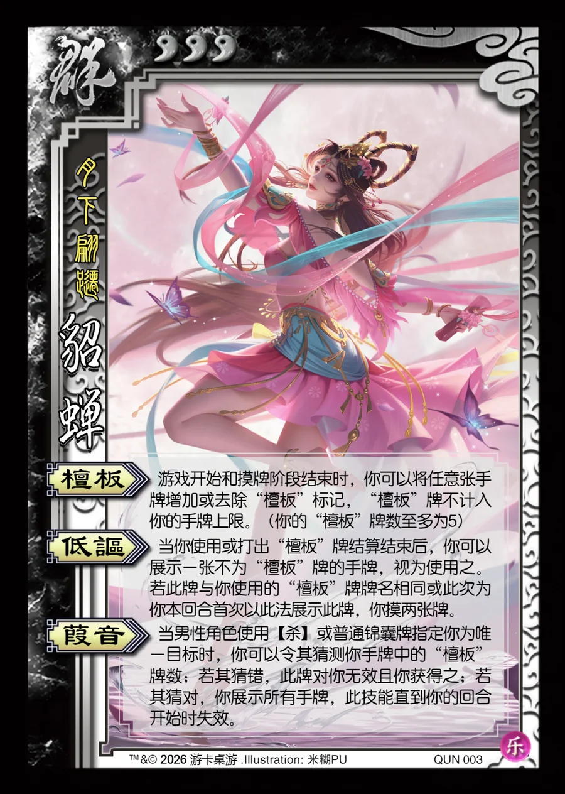

点击卡面查看大图
群
乐貂蝉
♥3月下翩跹
檀板
游戏开始和摸牌阶段结束时，你可以将任意张手牌增加或去除“檀板”标记，“檀板”牌不计入你的手牌上限。（你的“檀板”牌数至多为5）
低讴
当你使用或打出“檀板”牌结算结束后，你可以展示一张不为“檀板”牌的手牌，视为使用之。若此牌与你使用的“檀板”牌牌名相同或此次为你本回合首次以此法展示此牌，你摸两张牌。
葭音
当男性角色使用【杀】或普通锦囊牌指定你为唯一目标时，你可以令其猜测你手牌中的“檀板”牌数；若其猜错，此牌对你无效且你获得之；若其猜对，你展示所有手牌，此技能直到你的回合开始时失效。